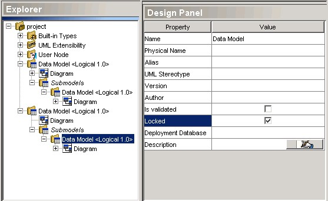

Locking
Models
When
large model projects are developed, especially when several people are
involved, it is useful to prevent changes in a critical model area but
to allow modification of other model parts. By using the Locking
Models feature, it is possible to lock one or several models,
submodels
or packages, in order to prevent any change in a particular part of the
project file.
Every
relational, process or class model, relational submodel and Java
package
can be locked. To do so, select the appropriate model or package in the
Explorer, and enable the Locked property in the Design
Panel.
Once a model or a package is locked, it is not possible to make any
semantic
or graphical modification to its contents, or to any
submodel/subpackage
under it.

Here
are some cases where Locking Models can be useful:
- You are reverse engineering a relational database; the
reverse engineered model
represents the physical structure of the database at a given time. If
you want
to improve the model, but also want to keep the original model
unmodified, create a copy of the reverse engineered model, lock it, and
work only on the copy. The compare/integrate feature can be
used to visualize improvements made since the model was originally
reverse engineered.
- You are merging a business context under an external process
in another project
file. You want to continue to work under the original business context,
but you also want to prevent any change under the main business process
to facilitate
any subsequent integration. You can then select the former external
process, and lock it to prevent changes under it.
- You are modeling Java application source code coming from both
in-house development efforts and
third-party sources. In this case, you do not want to modify the
third-party source code, so preventing changes in the corresponding
model is important. To prevent changes, select the
third-party main package and lock it.